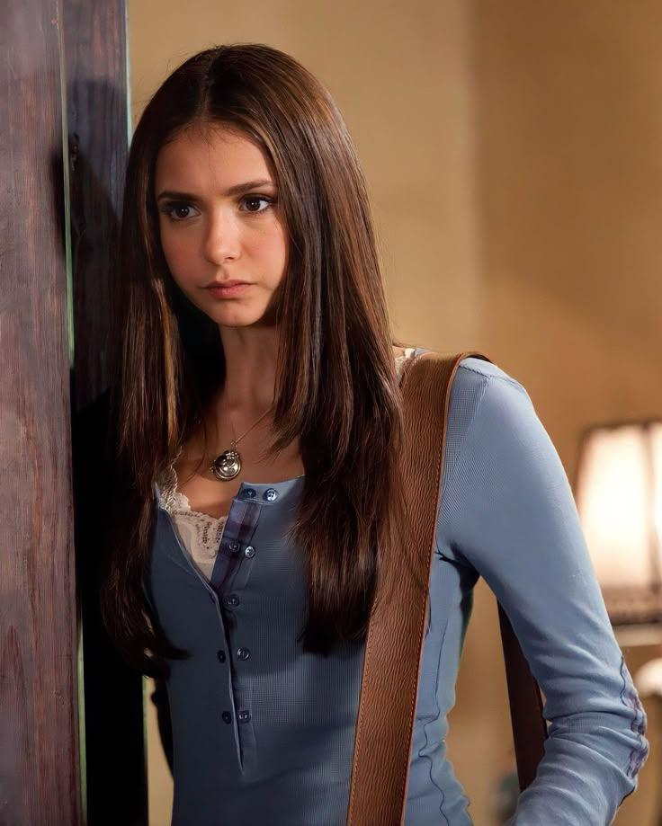
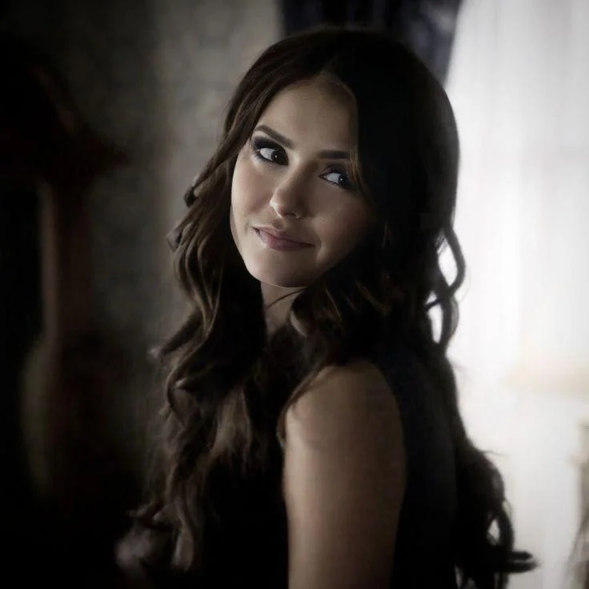
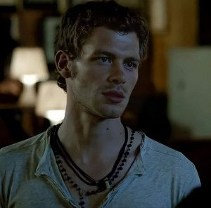
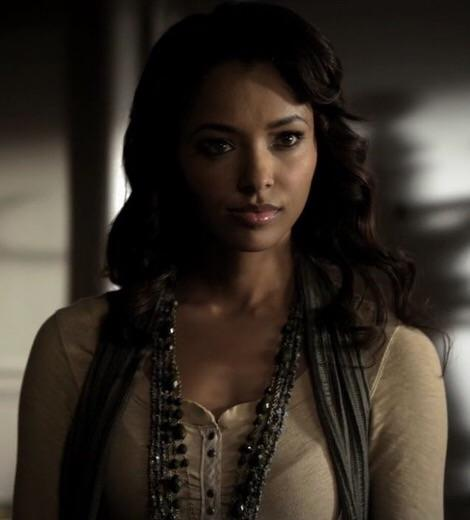
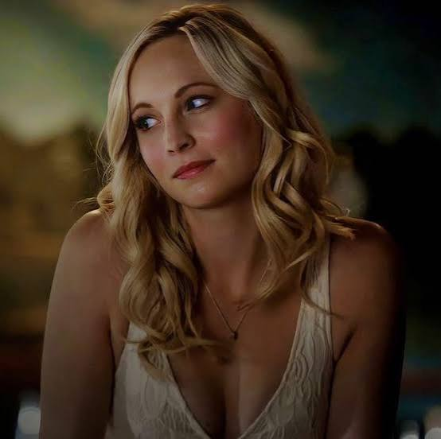
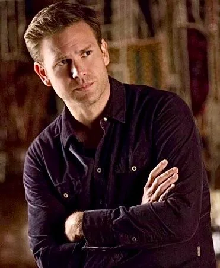

Elena Gilbert
Elena é uma das protagonistas da série. Sua vida muda completamente depois que ela descobre o mundo sobrenatural.
Ver personagem →
Entre segredos, escolhas e eternidade
THE VAMPIRE DIARIES
Conheça alguns dos personagens que fazem parte da história de Mystic Falls.

Elena é uma das protagonistas da série. Sua vida muda completamente depois que ela descobre o mundo sobrenatural.
Ver personagem →
Damon é um vampiro conhecido por sua personalidade sarcástica, impulsiva e imprevisível.
Ver personagem →
Stefan é o irmão de Damon e tenta controlar seu passado enquanto procura fazer escolhas melhores.
Ver personagem →

Katherine é uma personagem misteriosa e determinada, ligada diretamente à história dos irmãos Salvatore.
Ver personagem →

Klaus é um dos vampiros originais e possui grande importância nos acontecimentos sobrenaturais da série.
Ver personagem →

Bonnie é uma bruxa poderosa e uma das principais protetoras de seus amigos.
Ver personagem →

Caroline passa por grandes transformações e se torna uma personagem forte, confiante e determinada.
Ver personagem →
Jeremy é irmão de Elena e acaba se envolvendo diretamente com os acontecimentos sobrenaturais de Mystic Falls.
Ver personagem →

Alaric é um professor e caçador de vampiros que se torna uma importante figura para Elena e Jeremy.
Ver personagem →